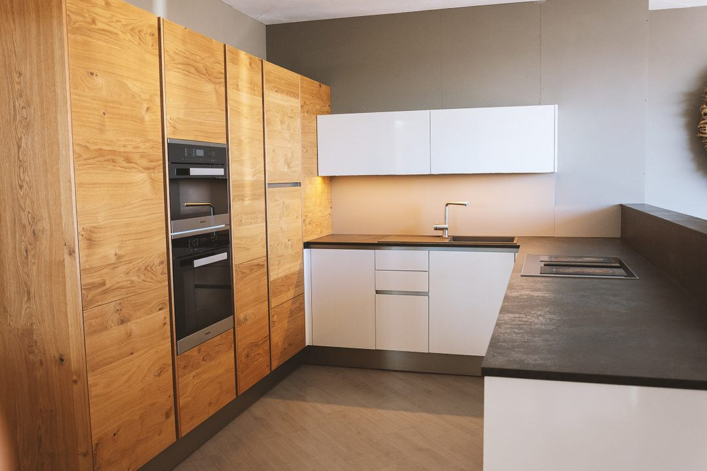
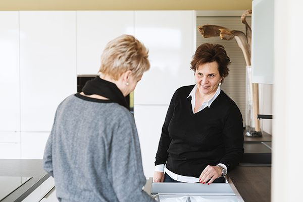
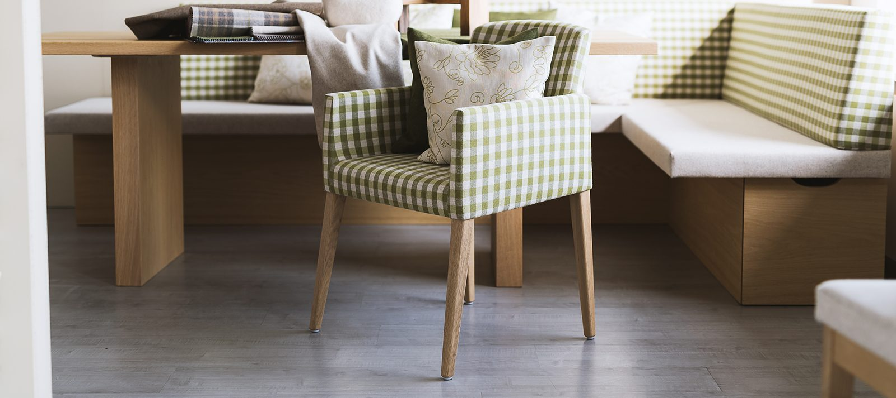

Küchen nach Maß
Planung, Fertigung und Montage – mit Holzarten und Oberflächen Ihrer Wahl. In der Planungsphase sind wir gerne mit Mustern behilflich.
Handwerk aus dem Innviertel
Küchen, Möbel, Badezimmer und textile Inneneinrichtung – geplant, gefertigt und montiert von elf Menschen aus der Region. Seit 1969 in Neukirchen an der Enknach.

Möbeltischlerei & Raumgestaltung
Ganz egal ob Küche, Wohnraum, Schlafzimmer oder Büro: Unser Team deckt alle Bereiche der Möbeltischlerei ab – von der Planung bis zur fachgerechten Umsetzung.
Seit fast 50 Jahren fertigen die Tischler in unserer Werkstatt exakt nach den Wünschen unserer Kundinnen und Kunden. Unser Handwerk ist die Planung und Entwicklung von Küchen und Einzelmöbeln und das Gestalten kompletter Inneneinrichtungen bis hin zu textilen Elementen. In unserer Produktpalette finden sich traditionelle Möbel genauso wie modulare Badezimmer oder Küchen.
Wir hören ganz genau hin, was unsere Kundinnen und Kunden wirklich wollen, und schaffen mit unserer Erfahrung die notwendige Struktur und Einrichtung für den jeweiligen Raum.

Leistungen
Möbel aus der eigenen Werkstatt, Küchen mit durchdachten Funktionen und Textilien, die den Raum fertig machen.
Planung, Fertigung und Montage – mit Holzarten und Oberflächen Ihrer Wahl. In der Planungsphase sind wir gerne mit Mustern behilflich.
Wohnzimmer, Schlafzimmer, Büro und modulare Badezimmer: traditionelle Möbel ebenso wie klare, moderne Einbauten.
Vorhänge, Raffrollos, Polster und Deko-Kissen – Stoffe vom Traditionshaus Backhausen, genäht im Innviertel.

Aktuell im Schauraum
In unserem Schauraum tut sich was: Wir haben aktuell zwei neue Küchen ausgestellt. Einmal in Vollholz gehalten und einmal im schlichten Weiß. Wer genauer hinsieht, wird merken, dass jede Küche ganz besondere Funktionen mitbringt.
Wenn Sie sich davon überzeugen möchten, schauen Sie einfach bei uns vorbei – gerne beraten wir Sie persönlich vor Ort. Ausgestellt sind auch textile Inneneinrichtungen.
Ablauf
Vier Etappen, ein Ansprechpartner: So läuft ein Projekt bei uns.
Unverbindlich, bei Ihnen zuhause oder im Schauraum. Wir decken auf, was der Raum wirklich braucht.
Detailgetreue Planung mit Muster für Holzart, Oberfläche und Stoff. Bevor wir hobeln, kommt die Planung.
Gefertigt wird in Neukirchen an der Enknach – von Tischlerinnen und Tischlern, die hier leben.
Fachgerechte Umsetzung vor Ort, inklusive der textilen Elemente bis zum letzten Kissen.
Mit Liebe zum Detail
Wir helfen Ihnen, die richtige Struktur für jeden Wohnraum zu finden. Mit viel Erfahrung und Fingerspitzengefühl gestalten wir nicht nur Ihre Möbel, sondern auch die passende Innenraumdekoration.
Dann vereinbaren Sie ein unverbindliches Erstgespräch und überzeugen Sie sich selbst von unserem Können.